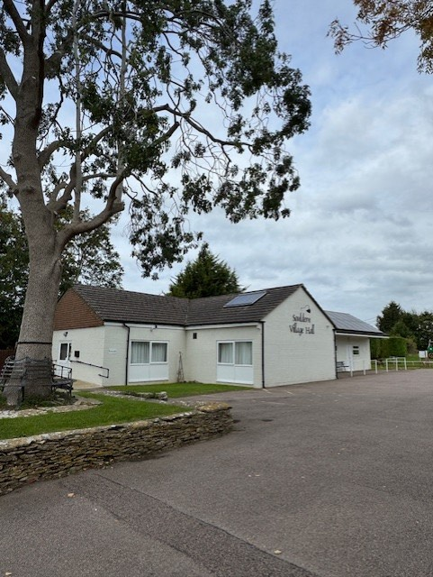
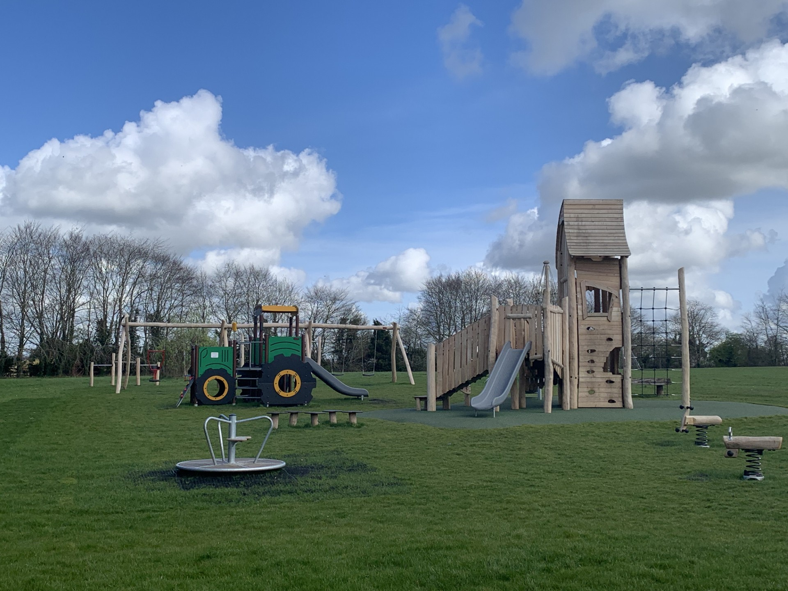

Souldern Village Hall sits at the top of the picturesque village of Souldern just off the B4100 equidistant between Bicester, Brackley and Banbury.
It has a large main room, a fully functioning kitchen and a smaller room which can be used independently as a meeting or committee room, or in conjunction with the main hall.
Situated next to the Village Hall is an ample car park, a recently installed children’s playground and a large playing field.
Please see the Souldern Village Hall Website for the booking form and all details of the hall.


The village hall has wifi and broadband internet provided by Gigaclear.